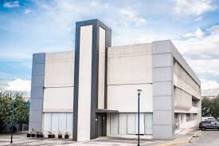
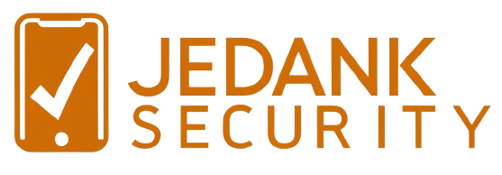

<div class="container">
  <div class="content">
    <div class="section">
      <h2>Misión</h2>
      <p>
        Nuestra misión es proporcionar una solución tecnológica avanzada para el
        monitoreo en tiempo real de la ubicación de las tablets utilizadas en nuestro tecnológico.
        Nos comprometemos a ofrecer una herramienta eficiente y confiable que mejore la gestión de
        los recursos tecnológicos y garantice la seguridad de los dispositivos.
      </p>
    </div>
    <div class="section">
      <h2>Visión</h2>
      <p>
        Ser reconocidos como líderes en la implementación de sistemas de monitoreo de dispositivos
        tecnológicos en instituciones educativas. Aspiramos a innovar continuamente y adaptar
        nuestras soluciones a las necesidades cambiantes de nuestros usuarios, asegurando la máxima
        eficiencia y protección de los recursos tecnológicos.
      </p>
    </div>
    <div class="images">
      
      
      
    </div>
  </div>
</div>
